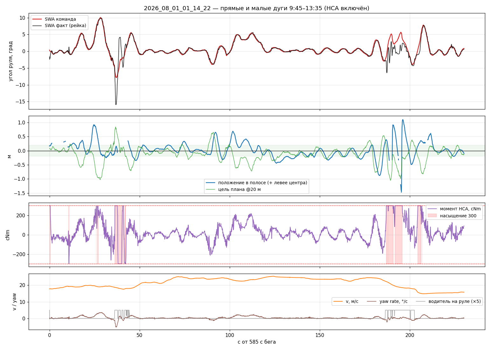

Latency and Thermal#
The controller always operates on a stale picture of the road.
At \(v = 22\) m/s a delay of \(0.23\) s is already ~5 m of travel. Without lookahead (fp_steer_delay_s) the loop systematically steers for where the car was, not where it is.

Fig. 9 Break the e2e path into measurable segments — then compare sessions fairly.#
Metrics#
cd app/src/main/scripts
python3 latency.py /path/to/session
quantity |
meaning |
|---|---|
|
|
e2e vision |
|
capture → lane_keep |
until desired path / SWA publish |
capture → steer (fresh) |
until command on actuation topic (stale-filtered) |
Warning
Raw controls/steer contains chassis republishes with stale vision_ts. For e2e use the filter in latency.py (same idea as PlotJuggler latency/ columns).
Session comparison#
session |
conditions |
Hz |
capture→LK |
|---|---|---|---|
|
no YOLO |
11.4 |
~69 ms |
|
no YOLO |
9.8 |
~81 ms |
|
no YOLO, throttle window |
8.5 / ~3 in dip |
87 ms, max ~0.8 s |
|
COCO YOLO |
7.2 |
88 ms, heavy tails |
YOLO on the same SoC competes with Supercombo. Separately, multi-minute thermal throttle shows up as rising infer_ms and collapsing Hz.
{kind=link}

Fig. 10 Only interpret controller quality on windows where vision stayed healthy.#
The rate is set by the camera period, not by the work#
Here is a result that surprised everyone who looked at it, and it is the reason this section exists.
Suppose one cycle of work — warp plus inference — takes \(W\) milliseconds, and the camera delivers a frame every \(T\) ms. The pipeline keeps a one-slot buffer holding the newest frame and picks it up the instant it is free, so it never idles by choice. Yet the achievable rate is not \(1000/W\): a cycle can only start when a frame is there, so it takes \(\lceil W/T \rceil\) camera periods per processed frame.
That ceiling function is the whole story. It means shaving 1 ms off the work can buy nothing at all, and crossing a multiple of \(T\) can buy a third of your rate at once.
import math
def achieved_hz(work_ms, camera_period_ms):
"""One-slot latest-frame buffer, no idling: work is quantised up to whole camera periods."""
periods = math.ceil(work_ms / camera_period_ms)
return 1000.0 / (camera_period_ms * periods), periods
# Camera periods as measured, not as requested: asking for 20 fps produced 44 ms, asking for 30 gave 33.
print(f"{'period':>8} {'work':>7} {'periods':>8} {'rate':>8} {'wait':>7}")
for T, work in ((44.0, 59.0), (33.3, 59.0), (33.3, 52.6), (33.3, 40.0), (33.3, 32.0), (16.7, 40.0)):
hz, n = achieved_hz(work, T)
print(f"{T:>6.1f} ms {work:>5.1f} ms {n:>8} {hz:>6.1f} Hz {T * n - work:>5.0f} ms")
Read the output against what we actually measured:
configuration |
predicted |
measured |
|---|---|---|
period 44 ms, work 59 ms |
2 periods → 11.4 Hz |
11.29 Hz, 2.02 camera frames per processed one |
period 33 ms, work 52.6 ms |
2 periods → 15.0 Hz |
13.24 Hz |
The first row is the model working exactly. The second is 12 % short of prediction, and that gap is the honest kind of loose end: it means the work is sometimes crossing into a third period, which the tail of the frame-prep distribution (median 7 ms, mean 11.4, p95 35.7) will do.
Why this matters for optimisation decisions
It tells you which cuts are worth making. With a 33 ms period and 52 ms of work, saving 19 ms drops you to one period and takes the rate from 15 Hz to 30 — while saving 10 ms buys nothing. That is why half-precision inference (worth ~15–20 ms of a 45.6 ms inference) is the one remaining lever, and why shaving 2.5 ms off a poll interval is not.
Where the time goes, and what is left to cut#
Measured on a 28-minute night run at 13.24 Hz. Each figure below is a median from latency.py, and the
cumulative column is what that tool actually reports — worth keeping straight, because the stage
durations and the cumulative stamps are different measurements and they do not have to add up exactly.
stage |
duration |
cumulative from capture |
cheap to improve? |
|---|---|---|---|
frame prep (warp) |
7 ms (mean 11.4, p95 35.7) |
jitter yes, magnitude no |
|
Supercombo inference |
45.6 ms (p95 53.8) |
54 ms to model output |
yes — half precision |
model output → steer command |
21 ms (p95 47) |
79 ms to the command (p95 111) |
marginal |
panda CAN transmit |
~10 ms (own 10 ms timer, not stamped) |
~89 ms to the wire |
no — HCA needs a strict 100 Hz cadence |
wait for the next camera frame |
see quantisation above |
yes — camera fps |
Everything except inference and the frame wait adds to about 38 ms, and there is no slack in it.
# What the delay costs in metres, and what half precision would buy if it gives the usual 1.5-2x here.
TO_COMMAND_MS = 79.0 # measured capture -> steer command
TO_WIRE_MS = 89.0 # plus the panda transmit timer
for v in (10.0, 15.0, 22.0):
print(f"at {v:>4.0f} m/s the car travels {v * TO_WIRE_MS * 1e-3:>4.2f} m before the command reaches CAN")
print()
for infer in (45.6, 30.0, 25.0):
work = 7.0 + infer
hz, n = achieved_hz(work, 33.3)
to_wire = work + (TO_WIRE_MS - 52.6) # everything after the model output is unchanged
print(f"inference {infer:>4.1f} ms -> work {work:>4.1f} ms -> {n} camera period(s) -> {hz:>4.1f} Hz, "
f"capture->wire {to_wire:>4.0f} ms")
Telling a late frame from a slow one#
Until 2026-08-06 the earliest timestamp on a frame was capture_ts_ms, which meant two very different
failures looked identical: a frame that arrived 40 ms after exposure, and a frame that waited 40 ms in
the buffer because inference was still busy. vision/lanes now also carries submit_ts_ms,
pickup_ts_ms and frames_dropped, and latency.py reports them.
The diagnosis is a two-by-two:
few drops |
many drops |
|
|---|---|---|
short delivery |
healthy |
inference cannot keep up |
long delivery |
camera or ISP is late |
both, and start with the camera |
That distinction is what the daytime stalls need — reference older than 300 ms for 15.9 % of one run, with a single 75-second hole — and it could not be made before.
phone/stats#
At 1 Hz the bag can carry cpu_pct, cpu_app_pct, thermal_status, temperatures, cpu0_freq_khz.
Align them with latency/vision/* in PlotJuggler when you claim “thermal”, not “bad MPC”.
Report requirements (course)#
vision_traffic: falsewhen comparing controllers.phone_stats: trueon teaching runs.Always report Hz and e2e vision alongside CTE.
Do not shrink
fp_steer_delay_sto the sum of medians without a closed-loop sweep — dynamics need margin (Vehicle model).
Exercise#
Reproduce the table above on your assigned bags (or explain why a session is missing stamps). Circle any window with Hz \(< 9\) and ban it from controller Pareto plots.
Next: Bag and offline analysis